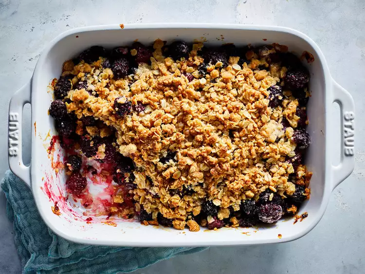

Blackberry Crisp

Fresh, tart blackberries lightly sweetened and finished with a crispy topping.
This dessert is great for evenings in late summer, especially if you have wild blackberries growing nearby. You may even have enough for a steady supply, or freeze extra to use in the winter!
Feel free to swap some of the blackberries with different fruits, like diced apples or pears, and other kinds of berries.
Ingredients
- Blackberries (5-6 cups)
- Lemon (zest and juice)
- Sugar (1 tsp)
- Cinnamon (1/2 tsp)
- Oats (1 cup)
- Flour (1 cup)
- Butter (1/2 stick, chilled and cut up)
- Brown sugar (1/2 cup)
- Nuts, yogurt, ice cream for garnish
Steps
- Preheat oven to 400 degrees F.
- In a large bowl, rinse and drain the berries.
- Add sugar, cinnamon, lemon juice, and zest. Gently stir to combine.
- Add the berry mixture to a well-greased baking dish, and retain the bowl.
- In the same bowl, add oats, flour, butter, and brown sugar.
- Use a pastry cutter, fork and knife, or an electric mixer on a low speed to combine until it reaches a pebbly-texture.
- Sprinkle the oat mixture over the berries, and bake for 25 to 30 minutes, until topping is golden-brown and crispy.
- Allow to cool for about 10 minutes before serving.